01 · 停止状态与恢复
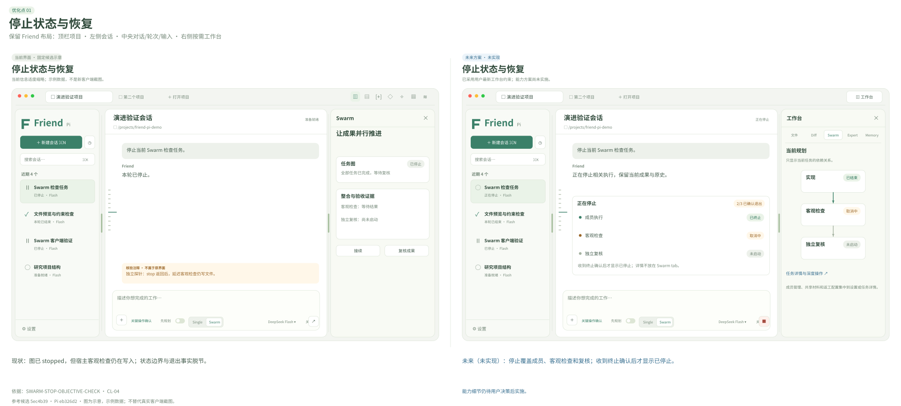
当前：图已 stopped，但宿主客观检查仍在写入；状态边界与退出事实脱节。
未来（未实现）：停止覆盖成员、客观检查和复核；收到终止确认后才显示已停止。
单独查看当前示意单独查看未来方案依据：SWARM-STOP-OBJECTIVE-CHECK · CL-04
02 · 原史缺失保护
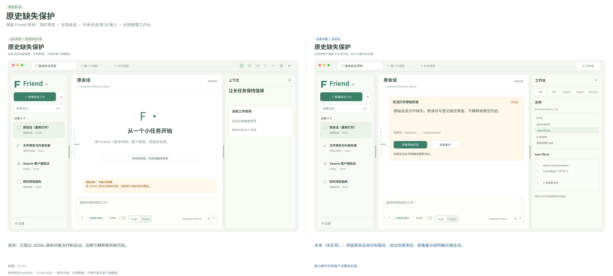
当前：已登记 JSONL 缺失时被当作新会话；旧索引静默换到新历史。
未来（未实现）：保留原会话身份和路径，给出恢复原史、查看备份或明确另建会话。
单独查看当前示意单独查看未来方案依据：CL-01
03 · 完整消息、Markdown 与工具结构
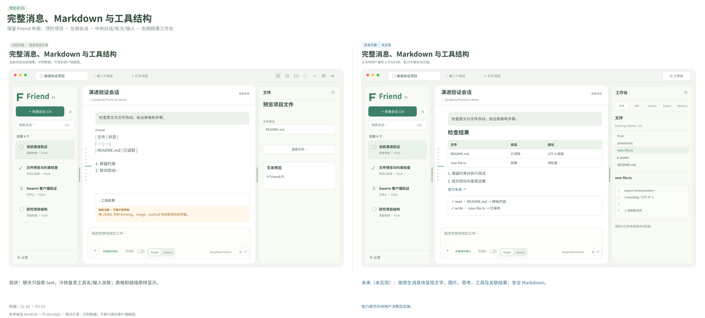
当前：聊天只投影 text，冷恢复丢工具名/输入关联；表格和链接原样显示。
未来（未实现）：按原生消息块呈现文字、图片、思考、工具及关联结果；安全 Markdown。
单独查看当前示意单独查看未来方案依据：CL-03 · EV-03
04 · 未跟踪文件 Diff
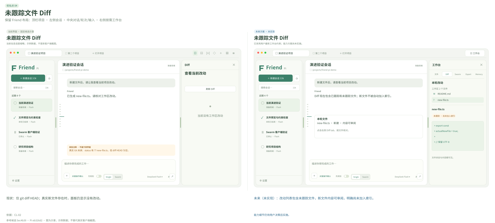
当前：仅 git diff HEAD；真实新文件存在时，面板仍显示没有改动。
未来（未实现）：改动列表包含未跟踪文件，新文件内容可审阅，明确尚未加入索引。
单独查看当前示意单独查看未来方案依据：CL-02
05 · 约束纠正与事实粒度
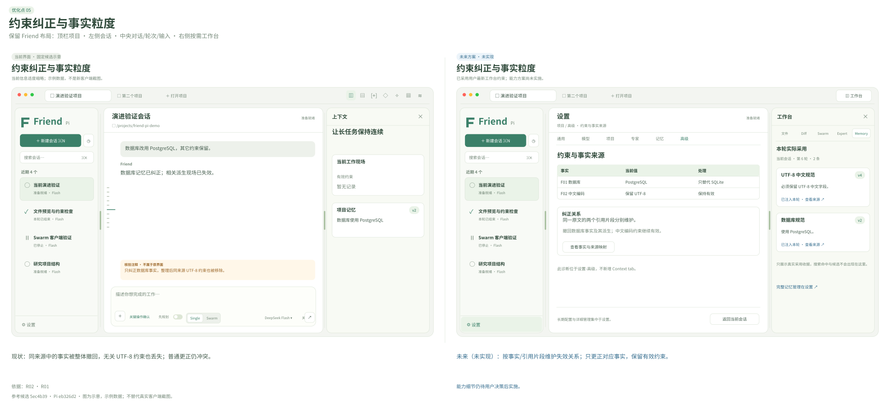
当前：同来源中的事实被整体撤回，无关 UTF-8 约束也丢失；普通更正仍冲突。
未来（未实现）：按事实/引用片段维护失效关系；只更正对应事实，保留有效约束。
单独查看当前示意单独查看未来方案依据：R02 · R01
06 · 遗忘与候选去重
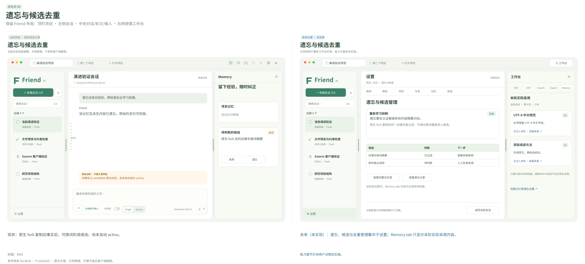
当前：原生 fork 复制旧事实后，可换词形成候选；尚未自动 active。
未来（未实现）：遗忘、候选与去重管理集中于设置；Memory tab 只显示本轮实际采用内容。
单独查看当前示意单独查看未来方案依据：M03
07 · 前台优先与后台队列
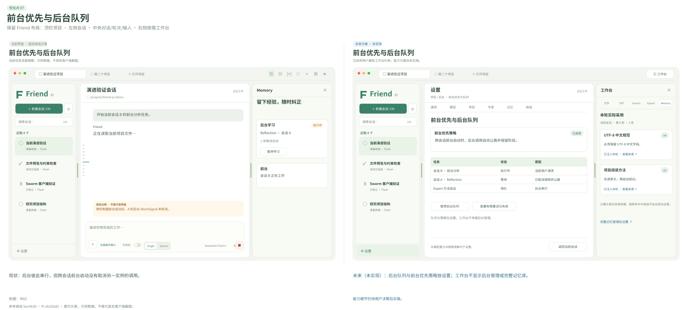
当前：后台彼此串行，但跨会话前台启动没有取消另一实例的调用。
未来（未实现）：后台队列与前台优先策略放设置；工作台不显示后台管理或完整记忆库。
单独查看当前示意单独查看未来方案依据：M02
08 · 专家采用一致与版本透明
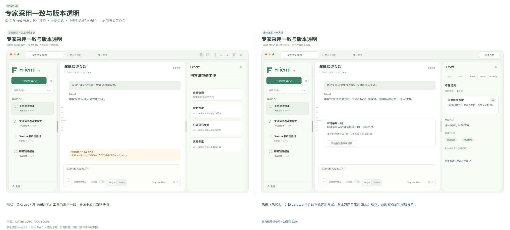
当前：自动 use 和明确采用执行工具范围不一致；界面不显示当轮快照。
未来（未实现）：Expert tab 仅介绍本轮选用专家、专业方向与常用 Skill；版本、范围和验证管理放设置。
单独查看当前示意单独查看未来方案依据：EXPERT-AUTO-TOOL-SCOPE
09 · 定向返工与 DAG
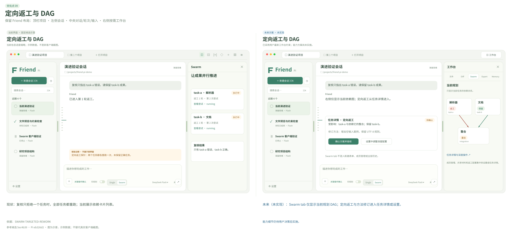
当前：复核只拒绝一个任务时，全部任务都重跑；当前展示依赖卡片列表。
未来（未实现）：Swarm tab 仅显示当前规划 DAG；定向返工与方法修订进入任务详情或设置。
单独查看当前示意单独查看未来方案依据：SWARM-TARGETED-REWORK
10 · 共享版本与冲突
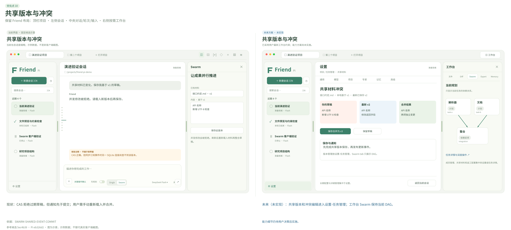
当前：CAS 拒绝过期草稿，但通知先于提交；用户需手动重新载入并合并。
未来（未实现）：共享版本和冲突编辑进入设置-任务管理；工作台 Swarm 保持当前 DAG。
单独查看当前示意单独查看未来方案依据：SWARM-SHARED-EVENT-COMMIT
11 · Plan 审批与执行转换
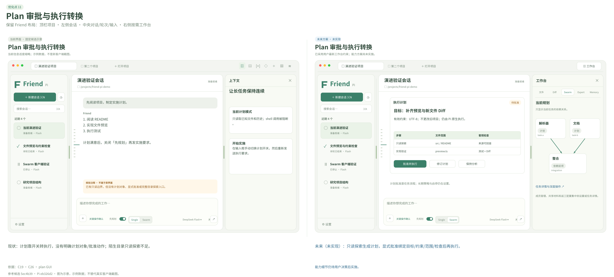
当前：计划靠开关转执行，没有明确计划对象/批准动作；陌生目录只读探索不足。
未来（未实现）：只读探索生成计划，显式批准绑定目标/约束/范围/检查后再执行。
单独查看当前示意单独查看未来方案依据：C19 · C26 · plan GUI
12 · 项目、会话状态与组织
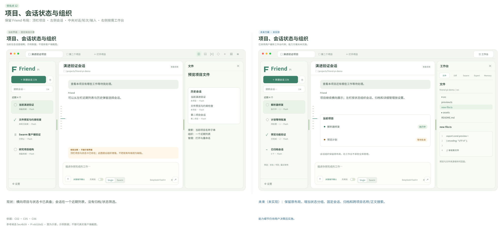
当前：横向项目与状态卡已具备；会话在一个近期列表，没有归档/状态筛选。
未来（未实现）：保留原布局，增加状态分组、固定会话、归档和跨项目名称/正文搜索。
单独查看当前示意单独查看未来方案依据：C02 · C05 · C06
13 · 轮次预览、书签与定位
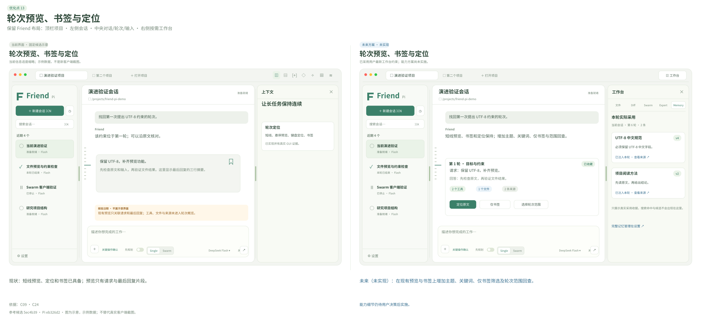
当前：短线预览、定位和书签已具备；预览只有请求与最后回复片段。
未来（未实现）：在现有预览与书签上增加主题、关键词、仅书签筛选及轮次范围回查。
单独查看当前示意单独查看未来方案依据：C09 · C24
14 · 分栏、窄屏与快捷键
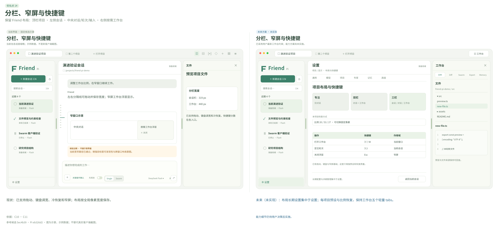
当前：已支持拖动、键盘调宽、冷恢复和窄屏；布局按全局像素宽度保存。
未来（未实现）：布局长期设置集中于设置；每项目预设与比例恢复，保持工作台五个轻量 tabs。
单独查看当前示意单独查看未来方案依据：C10 · C11
15 · 文件附件与多标签工作台
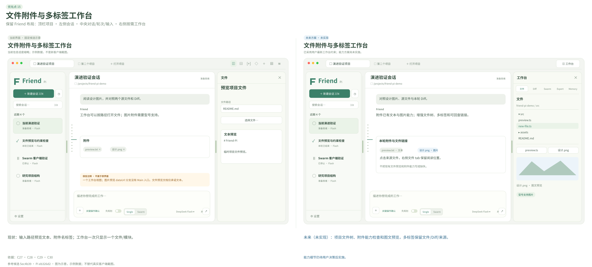
当前：输入路径预览文本、附件名标签；工作台一次只显示一个文件/模块。
未来（未实现）：项目文件树、附件能力检查和图文预览，多标签保留文件/Diff/来源。
单独查看当前示意单独查看未来方案依据：C27 · C28 · C29 · C30
16 · 设置搜索、配置一致性与模型能力
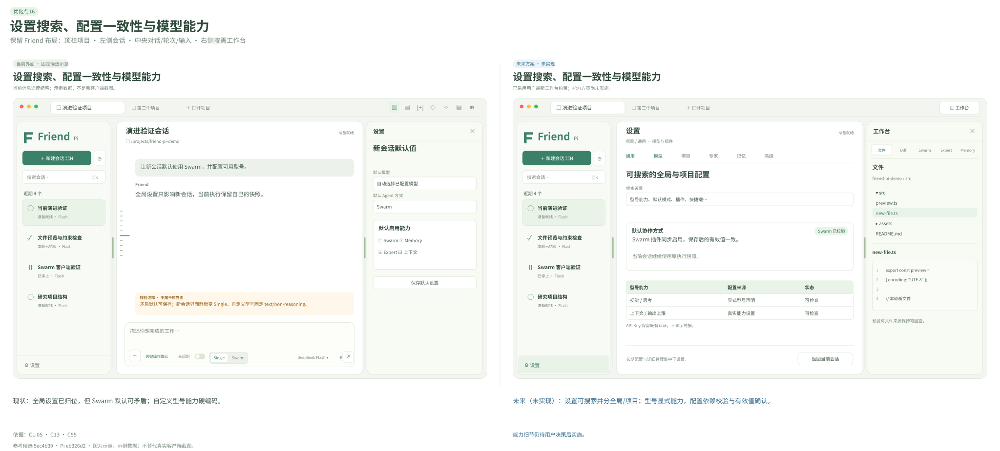
当前：全局设置已归位，但 Swarm 默认可矛盾；自定义型号能力硬编码。
未来（未实现）：设置可搜索并分全局/项目；型号显式能力，配置依赖校验与有效值确认。
单独查看当前示意单独查看未来方案依据：CL-05 · C13 · C55
17 · 专家验证模板与管理
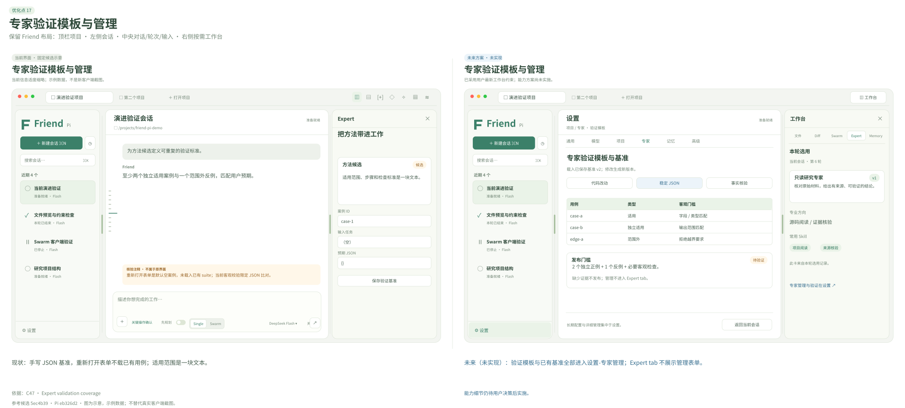
当前：手写 JSON 基准，重新打开表单不载已有用例；适用范围是一块文本。
未来（未实现）：验证模板与已有基准全部进入设置-专家管理；Expert tab 不展示管理表单。
单独查看当前示意单独查看未来方案依据：C47 · Expert validation coverage
18 · 来源导航与连续现场诊断
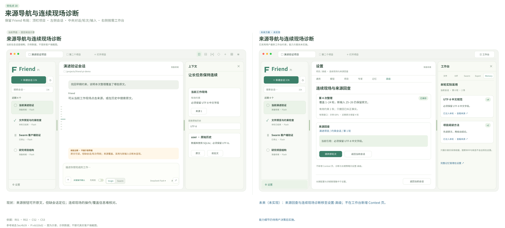
当前：来源按钮可开原文，但缺会话定位；连续现场的操作/覆盖信息难核对。
未来（未实现）：来源回查与连续现场诊断移至设置-高级；不在工作台新增 Context 页。
单独查看当前示意单独查看未来方案依据：R01 · R02 · C52 · C53
19 · 统一轻量工作台与真实采用收据
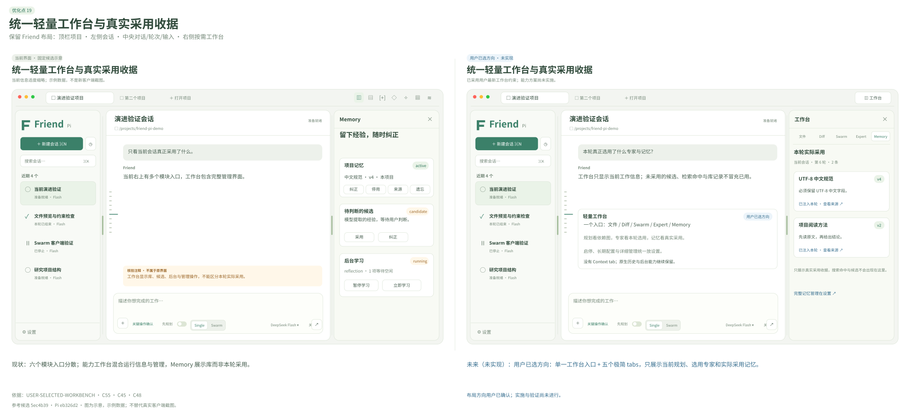
当前：六个模块入口分散；能力工作台混合运行信息与管理，Memory 展示库而非本轮采用。
未来（未实现）：用户已选方向：单一工作台入口 + 五个极简 tabs，只展示当前规划、选用专家和实际采用记忆。
单独查看当前示意单独查看未来方案依据：USER-SELECTED-WORKBENCH · C55 · C45 · C48